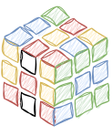

En malt Rubiks kube
En 3 x 3 x 3 Rubiks kube bestående av 27 1 x 1 x 1 kuber dyppes ed i et spann maling. Når malingen er tørr, deles Rubiks-buen opp i de 27 kubene. Hvor mange av disse kubene har maling på på tre sider, to sider, én side, null sider? Enn om det var en 4 x 4 x 4 Rubiks kube? Eller en 5 x 5 x 5 Rubiks kub? En 10 x 10 x 10 Rubiks kube? Og hva om det var en
